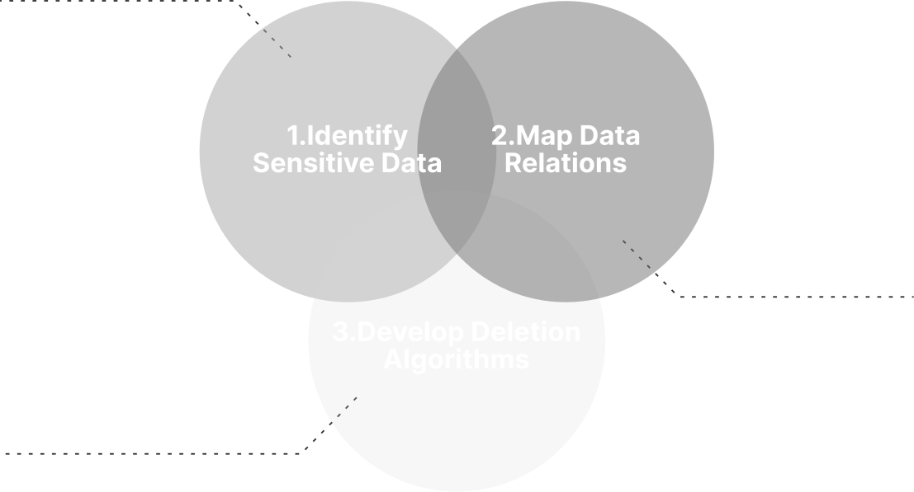
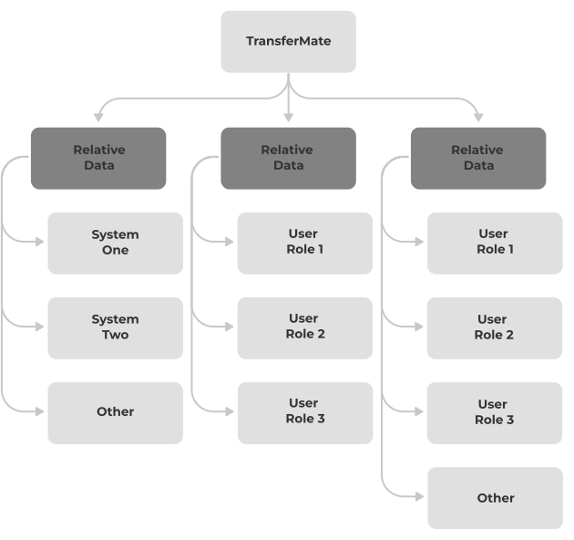

Data Deletion & Retention
Project Overview
The Data Deletion Initiative is a bi-annual project designed to identify and remove sensitive personal data that has remained untouched for over 10 years. This proactive measure ensures the protection of user privacy and complies with industry-standard regulations, which mandate the deletion of outdated data across all companies and large organisations handling user information.
The goal of this project was to precisely align with these regulatory requirements by identifying eligible user data and securely erasing it to safeguard privacy and maintain compliance.
Business Requirement Documentation
Reusable Deletion Scripts
Technical Specifications
Reports and Proof for Auditors
DBeaver - DBMS
SQL Queries
JS - For deletion scripts
September 20, 2023 - January 1, 2024
4-5 Months - Analysis + Delivery/Deletion
Note: I am unable to show in depth information on TM Educations data architecture due to NDA’s. This case study contains limited information in that sense.
Problems Statement & Challenges
Challenge/Problem Overview
Being a large corporation with thousands of clients, having each, thousands of users by itself was a really big challenge, but that aside, there were a few more challenges that we had to face as can be seen listed below.
Large amounts of outdated and redundant data accumulated over time, making it difficult to identify which data sets needed to be deleted.
Large amounts of outdated and redundant data accumulated over time, making it difficult to identify which data sets needed to be deleted.
Large amounts of outdated and redundant data accumulated over time, making it difficult to identify which data sets needed to be deleted.
Large amounts of outdated and redundant data accumulated over time, making it difficult to identify which data sets needed to be deleted.
Large amounts of outdated and redundant data accumulated over time, making it difficult to identify which data sets needed to be deleted.
Large amounts of outdated and redundant data accumulated over time, making it difficult to identify which data sets needed to be deleted.
Addressing these challenges required a structured, methodical approach, robust tools, and a clear understanding of both technical and regulatory constraints. Also, not to mention that we were working with a Legacy system and a somewhat poorly organized database.
Additionally, we had to stand trial and back our work in front of auditors, proving how all compliance perspectives were covered, thought factual evidence.
Constraints
Everyone deals with constraints.
Here in this section I have listed some but not all of the constraints which we had to take in account and deal with along the way towards completion.
Throughout the years a lot of clutter had accumulated within the database, as strict sanitary principles had not been followed, which made navigation a bit challenging.
In terms of time, we were pushed, which made things really stressing along the way towards completion, as we had just a few months prior to having to stand trial with auditors.
The existing legacy database presents significant challenges due to its outdated structure, making integration, scalability, and modernisation efforts more complex.
The most painful to deal with constraint was this one, as TransferMate had offered numerous clients exceptions and customisations, some of which collecting personal data and storing it outside of general tables.
Solution Overview
At first glance, data deletion may seem straightforward. However, working with a legacy database and managing the numerous channels through which sensitive user data is collected adds significant complexity.
Our overall approach is clear and can be broken down into three primary steps. While these steps may appear simple initially, they have proven to be incredibly challenging to execute in practice.
Transfermate Education by itself has numerous web logins, along that TransferMate education doesn’t only offer one product for one set of user types, we have here multiple payment types, individuals payments, company payments on behalf of individuals, B2B payments and 3rd party payments.
This ment that we had to take in all types onto account and had to be sure what data fell into the domain of GDPR regulations, not to mention reviewing the exceptions that were made for customers, which took in sensitive data that fell outside of the general database tables.
Being a large project, TransferMate Education has not one product that needed to be taken into account when it comes to data collection, storage and processing. At this stage, we started creating high level diagrams based on roles and data collection channels.
All aspects of the project and products had to be taken in account, and even though the chart shown here shows just some of the branches, having to go through each nuke and cranny of the education project took us effort and good charting skills.
At this stage we had to chart a map that would enable us to later on navigate the database with ease, given the higher level understanding of the data structure, we were able to understand the legacy database structure more accurately and outline all the relations that had to be taken in account.
Charting the database and its relations is a critical step in understanding the structure and interdependencies of the data. This process involves identifying where data is located, checking foreign keys, and uncovering any exceptions. This meticulous work ensures a comprehensive understanding of the database, which is essential for effective data management and compliance.
We owe our gratitude to the assigned Developer, who based on our high level diagraming and business requirements listed in a requirements document managed to chart out where and in which table the user data was held, also charting out all of the relations that were in scope.
With this step, though challenging, gave us a thorough understanding of the database’s structure and relationships. With this knowledge, were able to proceed confidently to the next phase of our project, ensuring that all data management activities were precise and compliant.
Data removal or data erasure is triggered by the expiry of the data retention period. (In our case – 10 years) When the data retention period expires, any further processing of the data by the Organisation becomes illegal.
Taking in the aforementioned, we outlined our deletion criteria in a way where time stamps were reviewed on each piece of information. Also, we made sure to keep backups in case if anything went wrong along the way of deletion.
In this case, our team developed a SQL script to identify inactive user accounts for potential deletion. The goal was to optimize database performance by removing outdated or redundant records based on specific criteria.
The script selects records from the user login system, focusing on accounts with certain login types and activity levels. It retrieves important data points such as account creation dates, payment history, and associated link information. By integrating data from several related tables, the script ensures a comprehensive view of each account's activity.
As part of the script execution, our team implemented a robust logging system to ensure accountability and transparency. This logging mechanism tracks key actions and decisions made during the execution of the script, capturing details such as which accounts were flagged for potential deletion, query results, and any exceptions encountered.
These logs serve as verifiable records that can be presented during audits, ensuring that every step of the process is traceable. By maintaining detailed logs, we provide clear evidence of compliance with internal and external audit requirements. The logging framework has been designed to be reusable and adaptable, ensuring that future audits and process reviews can be conducted seamlessly and with full transparency.
End Results & Takeaway
Through the implementation of our data deletion and retention strategy, we successfully addressed the challenges outlined in the initial problem statement. By streamlining the process and adhering to the established constraints, we optimized our database structure and eliminated redundant data without compromising essential information.
This solution not only improved system performance but also ensured regulatory compliance by enforcing proper data retention policies. The detailed logging and documentation maintained throughout the project provide a clear audit trail, ensuring transparency for future reviews.
The outcome is a more efficient, compliant, and scalable system that meets both operational requirements and audit standards, positioning us for continued success in managing user data effectively.